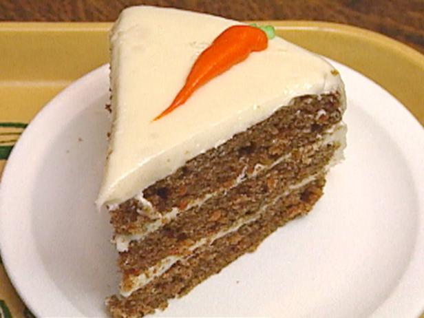

Grandes Receitas
Fonte:
Tudo Gostoso
Bolo de Cenoura

Ingredientes
- 1/2 xícara de óleo
- 3 cenouras médias raladas
- 4 ovos
- 2 xícaras de açúcar
- 2 1/2 xícaras de farinha de trigo
- 1 colher de sopa de fermento em pó
Modo de Preparo
- Em um liquidificador, adicione a cenoura, os ovos e o óleo, depois misture
- Acrescente o açúcar e bata novamente por 5 minutos
- Em uma tigela ou na batedeira, adicione a farinha de trigo e depois misture novamente
- Acrescente o fermento e misture lentamente com uma colher
- Asse em um forno preaquecido a 180° C por aproximadamente 40 minutos
Informações adicionais
Se o seu liquidificador for potente, o bolo todo pode ser feito nele.
Você poderá seguir ao vídeo ou a receita escrita, o resultado sairá perfeito dos 2 modos.
Utilize cerca de 250 g de cenoura para o bolo não solar. Se desejar uma cobertura
mais leve, adicione 5 colheres de leite.